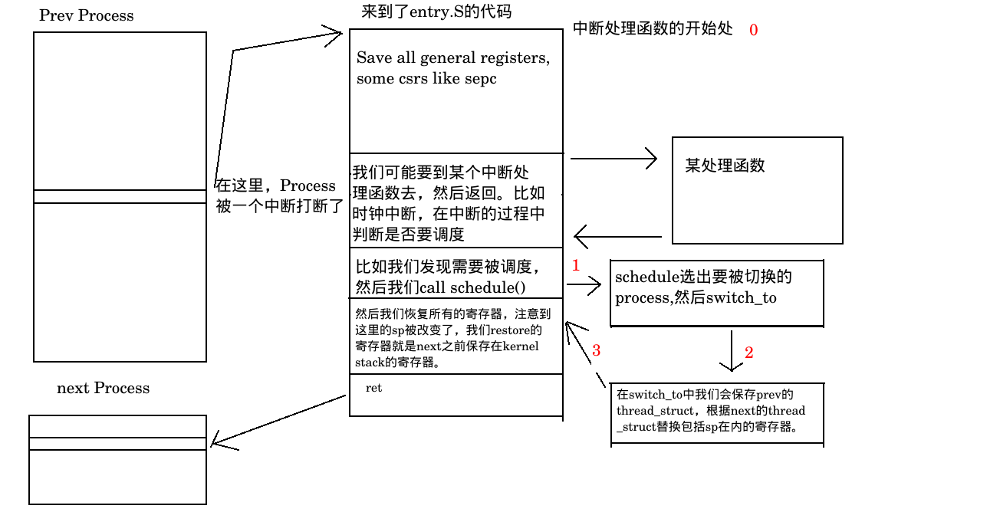

进程调度时的context_switch
Linux0.12的进程调度
数据结构——task_struct,tss_struct
首先是最重要的task_struct，也被称为PCB（Process Control Block进程控制块）或PD（Process Descriptor进程描述符）。 数据结构的定义就能学到好多。看到filp文件指针，还有指向当前工作目录的pwd，还有最基本的开头几个字段。
struct task_struct {
/* these are hardcoded - don't touch */
// 下面这几个字段是硬编码字段
long state; // 任务的运行状态(-1 不可运行,0 可运行(就绪), >0 已停止)
long counter; // 任务运行时间计数(递减)(滴答数),运行时间片
long priority; // 优先数.任务开始运行时counter=priority,越大运行越长
long signal; // 信号位图,每个比特位代表一种信号,信号值=位偏移值+1
struct sigaction sigaction[32]; // 信号执行属性结构,对应信号将要执行的操作和标志信息
long blocked; // 进程信号屏蔽码(对应信号位图)
/* various fields */
int exit_code; // 任务执行停止的退出码,其父进程会取.
unsigned long start_code; // 代码段地址
unsigned long end_code; // 代码长度(字节数)
unsigned long end_data; // 代码长度+数据长度(字节数)
unsigned long brk; // 总长度(字节数)
unsigned long start_stack; // 堆栈段地址
long pid; // 进程标识号(进程号)
long pgrp; // 进程组号
long session; // 会话号
long leader; // 会话首领
int groups[NGROUPS]; // 进程所属组号.一个进程可属于多个组
/*
* pointers to parent process, youngest child, younger sibling,
* older sibling, respectively. (p->father can be replaced with
* p->p_pptr->pid)
*/
struct task_struct *p_pptr; // 指向父进程的指针
struct task_struct *p_cptr; // 指向最新子进程的指针
struct task_struct *p_ysptr; // 指向比自己后创建的相邻进程的指针
struct task_struct *p_osptr; // 指向比自己早创建的相邻进程的指针
unsigned short uid; // 用户标识号(用户id)
unsigned short euid; // 有效用户id
unsigned short suid; // 保存的用户id
unsigned short gid; // 组标识号(级id)
unsigned short egid; // 有效级id
unsigned short sgid; // 保存的组id
unsigned long timeout; // 内核定时超时值
unsigned long alarm; // 报警定时值(滴答数)
long utime; // 用户态运行时间(滴答数)
long stime; // 系统态运行时间(滴答数)
long cutime; // 子进程用户态运行时间
long cstime; // 子进程系统态运行时间
long start_time; // 进程开始运行时刻.
struct rlimit rlim[RLIM_NLIMITS]; // 进程资源使用统计数组.
/* per process flags, defined below */
unsigned int flags; // 各进程的标志
unsigned short used_math; // 标志:是否使用了协处理器.
/* file system info */
/* -1 if no tty, so it must be signed */
int tty; // 进程使用tty终端的子设备号.-1表示没有使用
unsigned short umask; // 文件创建属性屏蔽位
struct m_inode * pwd; // 当前工作目录i节点结构指针
struct m_inode * root; // 根目录i节点结构指针
struct m_inode * executable; // 执行文件i节点结构指针
struct m_inode * library; // 被加载库文件i节点结构指针
unsigned long close_on_exec; // 执行时关闭文件句柄位图标志.(include/fcntl.h)
struct file * filp[NR_OPEN]; // 文件结构指针表,最多32项.表项号即是文件描述符的值
/* ldt for this task 0 - zero 1 - cs 2 - ds&ss */
struct desc_struct ldt[3]; // 局部描述符表, 0 - 空,1 - 代码段cs,2 - 数据和堆栈段ds&ss
/* tss for this task */
struct tss_struct tss; // 进程的任务状态段信息结构
};
- 这是上面提到的(TSS)task state segment 。我们可以看到这里保存了很多寄存器，维护process运行的context。在x86架构中tss数据结构是得到硬件支持的，所以在别的架构中，我们并没有看到这个数据结构。
- 我们注意到里面有3个ss(ss,ss0,ss1,ss2)，3个esp(esp0,esp1,esp2,esp3)。其中的ss0和esp0是用来索引kernel stack的，至于1和2，是因为intel架构有3个等级，但是在系统实现的时候我们并没有用到1和2。
- 我原本以为这个数据结构肯定是用来保存寄存器副本的。通过阅读源代码，在Linux0.12中似乎就是利用这个保存上下文，这个方法也挺好理解的。但是对于新版本的linux来说，tss的作用被大大的削弱了，似乎只是为了和Intel的架构对应，现在上下文的保存可以参考下面。
struct tss_struct {
long back_link; /* 16 high bits zero */
long esp0;
long ss0; /* 16 high bits zero */
long esp1;
long ss1; /* 16 high bits zero */
long esp2;
long ss2; /* 16 high bits zero */
long cr3;
long eip;
long eflags;
long eax;
long ecx;
long edx;
long ebx;
long esp;
long ebp;
long esi;
long edi;
long es; /* 16 high bits zero */
long cs; /* 16 high bits zero */
long ss; /* 16 high bits zero */
long ds; /* 16 high bits zero */
long fs; /* 16 high bits zero */
long gs; /* 16 high bits zero */
long ldt; /* 16 high bits zero */
/*When a User Mode process attempts to access an I/O port by means of an in or out instruction, the CPU may need to access an I/O Permission Bitmap stored in the TSS to verify whether the process is allowed to address the port.*/
long trace_bitmap; /*I/O port permission bitmap */
struct i387_struct i387;
};
具体实现
Linux0.12的进程切换是和硬件密不可分的。但是思想还是可以领悟的。留个坑待填。
Linux5.9-riscv的进程调度的上下文切换
数据结构
Linux5.9的task_struct太复杂了，不贴代码了。
//======arch/riscv/include/asm/thread_info.h==============
/*
* low level task data that entry.S needs immediate access to
* - this struct should fit entirely inside of one cache line
* - if the members of this struct changes, the assembly constants
* in asm-offsets.c must be updated accordingly
* - thread_info is included in task_struct at an offset of 0. This means that
* tp points to both thread_info and task_struct.
*/
struct thread_info {
unsigned long flags; /* low level flags */
int preempt_count; /* 0=>preemptible, <0=>BUG */
mm_segment_t addr_limit;
/*
* These stack pointers are overwritten on every system call or
* exception. SP is also saved to the stack it can be recovered when
* overwritten.
*/
long kernel_sp; /* Kernel stack pointer */
long user_sp; /* User stack pointer */
int cpu;
};
//===============/arch/riscv/include/asm/processor.h==================
//这个结构相当于是保存CPU中断过程中的上下文，所以我们注意到里面只有一个kernel 的sp。
/* CPU-specific state of a task */
struct thread_struct {
/* Callee-saved registers */
unsigned long ra;
unsigned long sp; /* Kernel mode stack */
unsigned long s[12]; /* s[0]: frame pointer */
struct __riscv_d_ext_state fstate;
};
//================/arch/riscv/kernel/process.c===================
void start_thread(struct pt_regs *regs, unsigned long pc,
unsigned long sp)
{
regs->status = SR_PIE;
if (has_fpu) {
regs->status |= SR_FS_INITIAL;
/*
* Restore the initial value to the FP register
* before starting the user program.
*/
fstate_restore(current, regs);
}
regs->epc = pc;
regs->sp = sp;
set_fs(USER_DS);
}
thread_info在task_struct的开头，thread_struct在task_struct的结尾。
RISCV的实现
我们将Linux的调度分成四种情况：kernel thread的主动/被动调度，user thread的主动/被动调度。
User thread的被动调度

对应的源代码：
- 保存所有的可能被修改的寄存器，包括所有的通用寄存器和一些CSR
ENTRY(handle_exception)
/*
* If coming from userspace, preserve the user thread pointer and load
* the kernel thread pointer. If we came from the kernel, the scratch
* register will contain 0, and we should continue on the current TP.
*/
csrrw tp, CSR_SCRATCH, tp
bnez tp, _save_context
_restore_kernel_tpsp:
csrr tp, CSR_SCRATCH
REG_S sp, TASK_TI_KERNEL_SP(tp)
_save_context:
REG_S sp, TASK_TI_USER_SP(tp)
REG_L sp, TASK_TI_KERNEL_SP(tp)
addi sp, sp, -(PT_SIZE_ON_STACK)
REG_S x1, PT_RA(sp)
REG_S x3, PT_GP(sp)
REG_S x5, PT_T0(sp)
REG_S x6, PT_T1(sp)
REG_S x7, PT_T2(sp)
REG_S x8, PT_S0(sp)
REG_S x9, PT_S1(sp)
REG_S x10, PT_A0(sp)
REG_S x11, PT_A1(sp)
REG_S x12, PT_A2(sp)
REG_S x13, PT_A3(sp)
REG_S x14, PT_A4(sp)
REG_S x15, PT_A5(sp)
REG_S x16, PT_A6(sp)
REG_S x17, PT_A7(sp)
REG_S x18, PT_S2(sp)
REG_S x19, PT_S3(sp)
REG_S x20, PT_S4(sp)
REG_S x21, PT_S5(sp)
REG_S x22, PT_S6(sp)
REG_S x23, PT_S7(sp)
REG_S x24, PT_S8(sp)
REG_S x25, PT_S9(sp)
REG_S x26, PT_S10(sp)
REG_S x27, PT_S11(sp)
REG_S x28, PT_T3(sp)
REG_S x29, PT_T4(sp)
REG_S x30, PT_T5(sp)
REG_S x31, PT_T6(sp)
- 是否要schedule选择，有一个变量task_struct中有一个变量need_reshced，我们根据他的值判断是否要进行调度，关注“need——resched”
;entry.S 329行
#if IS_ENABLED(CONFIG_PREEMPTION)
resume_kernel:
REG_L s0, TASK_TI_PREEMPT_COUNT(tp)
bnez s0, restore_all
REG_L s0, TASK_TI_FLAGS(tp)
andi s0, s0, _TIF_NEED_RESCHED
beqz s0, restore_all
call preempt_schedule_irq
j restore_all
#endif
work_pending:
/* Enter slow path for supplementary processing */
la ra, ret_from_exception
andi s1, s0, _TIF_NEED_RESCHED
bnez s1, work_resched
work_notifysig:
/* Handle pending signals and notify-resume requests */
csrs CSR_STATUS, SR_IE /* Enable interrupts for do_notify_resume() */
move a0, sp /* pt_regs */
move a1, s0 /* current_thread_info->flags */
tail do_notify_resume
work_resched:
tail schedule
- switch其实是一个宏定义，真正的内容在entry.S。我们会恢复我们在中断处理过程中的上下文，例如sp会切换我们的栈，ra让我们能返回到上次中断处理后的返回部分。
;/arch/riscv/kernel/entry.S 第389行
/*
* Integer register context switch
* The callee-saved registers must be saved and restored.
*
* a0: previous task_struct (must be preserved across the switch)
* a1: next task_struct
*
* The value of a0 and a1 must be preserved by this function, as that's how
* arguments are passed to schedule_tail.
*/
ENTRY(__switch_to)
/* Save context into prev->thread */
li a4, TASK_THREAD_RA
add a3, a0, a4
add a4, a1, a4
REG_S ra, TASK_THREAD_RA_RA(a3)
REG_S sp, TASK_THREAD_SP_RA(a3)
REG_S s0, TASK_THREAD_S0_RA(a3)
REG_S s1, TASK_THREAD_S1_RA(a3)
REG_S s2, TASK_THREAD_S2_RA(a3)
REG_S s3, TASK_THREAD_S3_RA(a3)
REG_S s4, TASK_THREAD_S4_RA(a3)
REG_S s5, TASK_THREAD_S5_RA(a3)
REG_S s6, TASK_THREAD_S6_RA(a3)
REG_S s7, TASK_THREAD_S7_RA(a3)
REG_S s8, TASK_THREAD_S8_RA(a3)
REG_S s9, TASK_THREAD_S9_RA(a3)
REG_S s10, TASK_THREAD_S10_RA(a3)
REG_S s11, TASK_THREAD_S11_RA(a3)
/* Restore context from next->thread */
REG_L ra, TASK_THREAD_RA_RA(a4)
REG_L sp, TASK_THREAD_SP_RA(a4)
REG_L s0, TASK_THREAD_S0_RA(a4)
REG_L s1, TASK_THREAD_S1_RA(a4)
REG_L s2, TASK_THREAD_S2_RA(a4)
REG_L s3, TASK_THREAD_S3_RA(a4)
REG_L s4, TASK_THREAD_S4_RA(a4)
REG_L s5, TASK_THREAD_S5_RA(a4)
REG_L s6, TASK_THREAD_S6_RA(a4)
REG_L s7, TASK_THREAD_S7_RA(a4)
REG_L s8, TASK_THREAD_S8_RA(a4)
REG_L s9, TASK_THREAD_S9_RA(a4)
REG_L s10, TASK_THREAD_S10_RA(a4)
REG_L s11, TASK_THREAD_S11_RA(a4)
/* Swap the CPU entry around. */
lw a3, TASK_TI_CPU(a0)
lw a4, TASK_TI_CPU(a1)
sw a3, TASK_TI_CPU(a1)
sw a4, TASK_TI_CPU(a0)
/* The offset of thread_info in task_struct is zero. */
move tp, a1
ret
ENDPROC(__switch_to)
/* switch_to宏
* 有趣的是这里有三个参数
#define switch_to(prev, next, last) \
do { \
struct task_struct *__prev = (prev); \
struct task_struct *__next = (next); \
if (has_fpu) \
__switch_to_aux(__prev, __next); \
((last) = __switch_to(__prev, __next)); \
} while (0)
- 恢复所有的寄存器
;/arch/riscv/kernel/entry.S 第254行
restore_all:
#ifdef CONFIG_TRACE_IRQFLAGS
REG_L s1, PT_STATUS(sp)
andi t0, s1, SR_PIE
beqz t0, 1f
call trace_hardirqs_on
j 2f
1:
call trace_hardirqs_off
2:
#endif
REG_L a0, PT_STATUS(sp)
/*
* The current load reservation is effectively part of the processor's
* state, in the sense that load reservations cannot be shared between
* different hart contexts. We can't actually save and restore a load
* reservation, so instead here we clear any existing reservation --
* it's always legal for implementations to clear load reservations at
* any point (as long as the forward progress guarantee is kept, but
* we'll ignore that here).
*
* Dangling load reservations can be the result of taking a trap in the
* middle of an LR/SC sequence, but can also be the result of a taken
* forward branch around an SC -- which is how we implement CAS. As a
* result we need to clear reservations between the last CAS and the
* jump back to the new context. While it is unlikely the store
* completes, implementations are allowed to expand reservations to be
* arbitrarily large.
*/
REG_L a2, PT_EPC(sp)
REG_SC x0, a2, PT_EPC(sp)
csrw CSR_STATUS, a0
csrw CSR_EPC, a2
REG_L x1, PT_RA(sp)
REG_L x3, PT_GP(sp)
REG_L x4, PT_TP(sp)
REG_L x5, PT_T0(sp)
REG_L x6, PT_T1(sp)
REG_L x7, PT_T2(sp)
REG_L x8, PT_S0(sp)
REG_L x9, PT_S1(sp)
REG_L x10, PT_A0(sp)
REG_L x11, PT_A1(sp)
REG_L x12, PT_A2(sp)
REG_L x13, PT_A3(sp)
REG_L x14, PT_A4(sp)
REG_L x15, PT_A5(sp)
REG_L x16, PT_A6(sp)
REG_L x17, PT_A7(sp)
REG_L x18, PT_S2(sp)
REG_L x19, PT_S3(sp)
REG_L x20, PT_S4(sp)
REG_L x21, PT_S5(sp)
REG_L x22, PT_S6(sp)
REG_L x23, PT_S7(sp)
REG_L x24, PT_S8(sp)
REG_L x25, PT_S9(sp)
REG_L x26, PT_S10(sp)
REG_L x27, PT_S11(sp)
REG_L x28, PT_T3(sp)
REG_L x29, PT_T4(sp)
REG_L x30, PT_T5(sp)
REG_L x31, PT_T6(sp)
REG_L x2, PT_SP(sp)
#ifdef CONFIG_RISCV_M_MODE
mret
#else
sret
#endif
- 首先，每一个process都对应有一个kernel stack和user stack，在RISCV中没有辅助的硬件帮我们切换。所以我们每次都在kernel stack中保存两套寄存器，进入的时候拿出来kernel sp，保存user sp。
;arch/riscv/kernel/entry.S，第29行
_restore_kernel_tpsp:
csrr tp, CSR_SCRATCH
REG_S sp, TASK_TI_KERNEL_SP(tp)
_save_context:
REG_S sp, TASK_TI_USER_SP(tp)
REG_L sp, TASK_TI_KERNEL_SP(tp)
最后我们回答这个问题：因为不需要。寄存器其实保存在系统栈里了。
Kernel Thread的被动调度
明确一点的是，kernel thread的切换属于单纯的context switch，不涉及mode的切换。和user mode差不多。
（留个坑）
Kernel thread的主动调度
对于kernel thread，想要主动调度可以直接调用schedule()，返回地址会被存在ra里。
然后我们在之后的switch_to中，会把ra保存到thread_struct中，准确来说所有的callee saved register我们都会保存。对于caller saved register，这个我们要求先前的kernel thread自己保存。然后切换出下一个进程的一套寄存器。
这样当我们返回的时候，返回地址已经变成了next进程。
User Thread的主动调度
通过pause()系统调用实现这个功能。具体的我还没看。
Kernel Stack的结构
申老师的blog，是谷歌"why there is no pc in thread_struct"的第一个搜索结果。
task_struct，thread_info存储在和thread对应的kernel stack相同的位置（或者说是在栈顶占了2个Page）
//=======/include/linux/sched.h 第1679行
union thread_union {
#ifndef CONFIG_ARCH_TASK_STRUCT_ON_STACK
struct task_struct task;
#endif
#ifndef CONFIG_THREAD_INFO_IN_TASK
struct thread_info thread_info;
#endif
unsigned long stack[THREAD_SIZE/sizeof(long)];
};

pt_regsis at the high end of kernel stack, is mainly used for saving user registers in user-kernel mode switching. Therefore, after returning to user space, the first instruction get executed is atpt_regs->pc.这个部分就是我们从umode进入smode，在entry.S开头部分保存的寄存器。cpu_contextis in task_struct->thread_struct, is mainly used for saving registers of context switch. So right after context switch to a process, itscpu_context->pcwill get executed.这个部分是用来做kernel thread的context switch的，所以只需要保存好callee saved的寄存器就好了，其他的寄存器由caller自己决定保存与否。
我现在决定我可能搞清楚了kernel thread的主动调度和user thread的被动调度，但是kernel thread是怎么被动调度的呢？一般这个情况就是time int了。